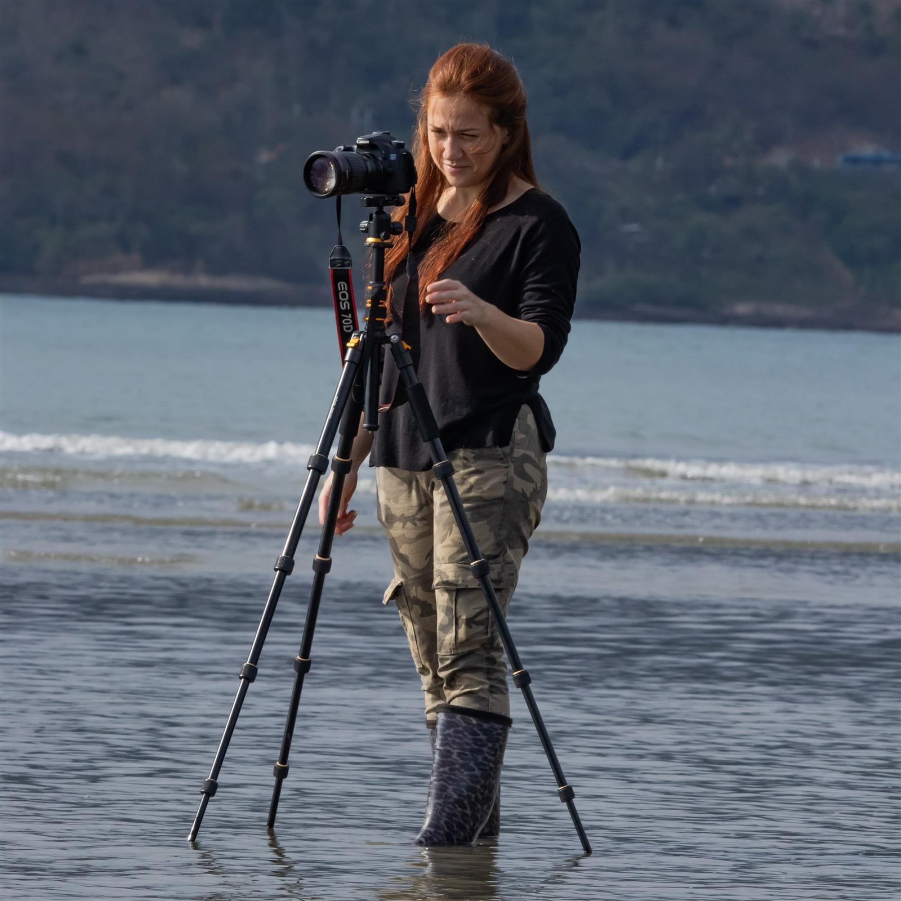
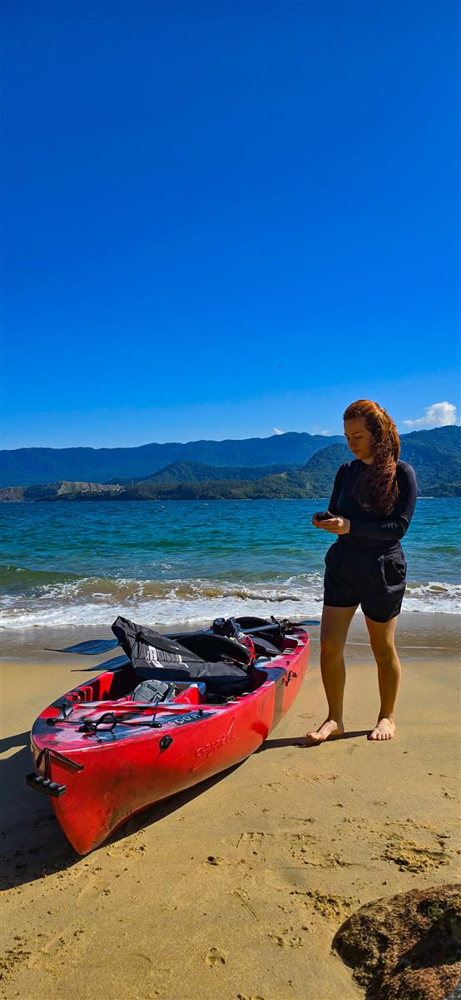
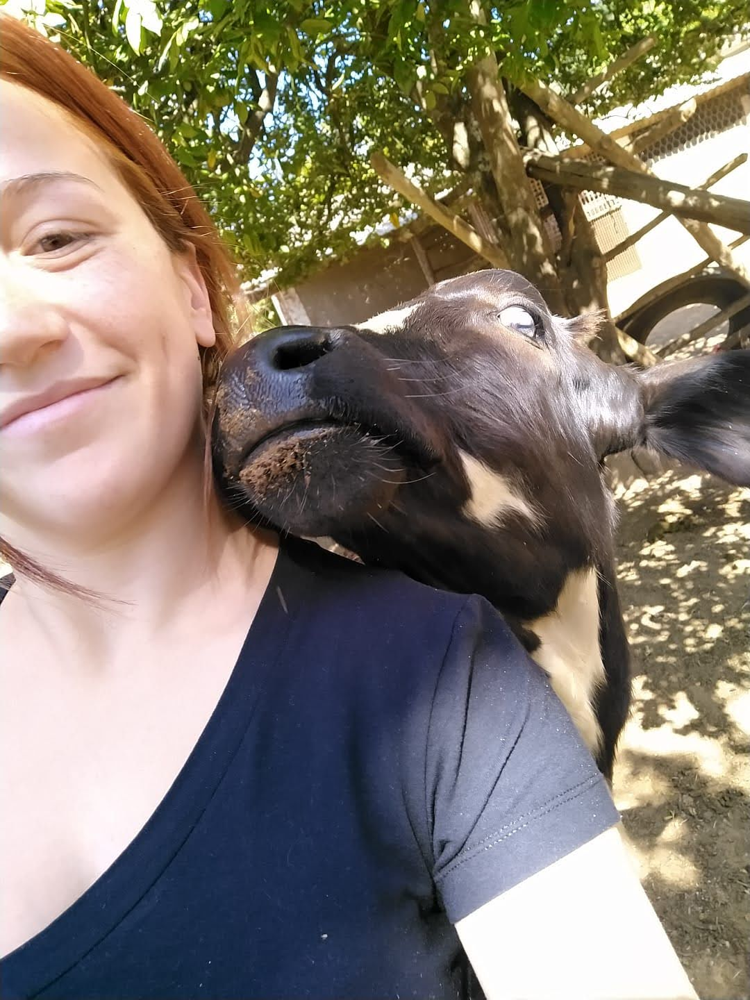
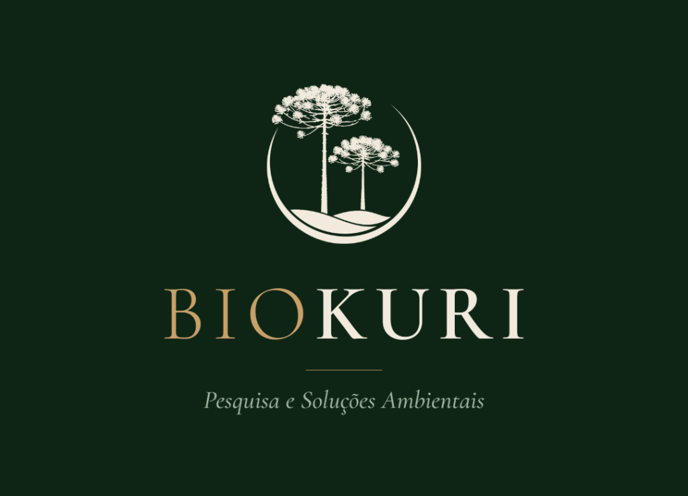
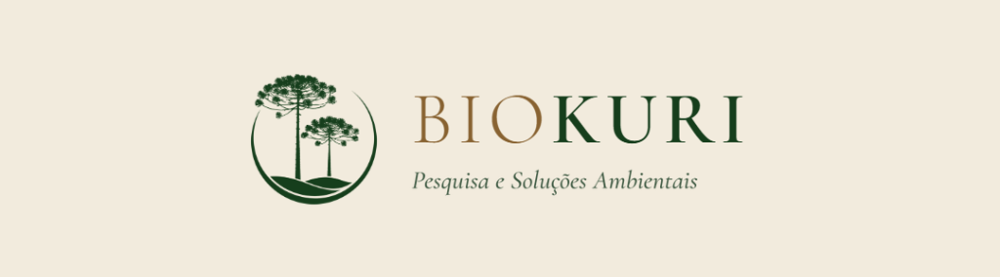
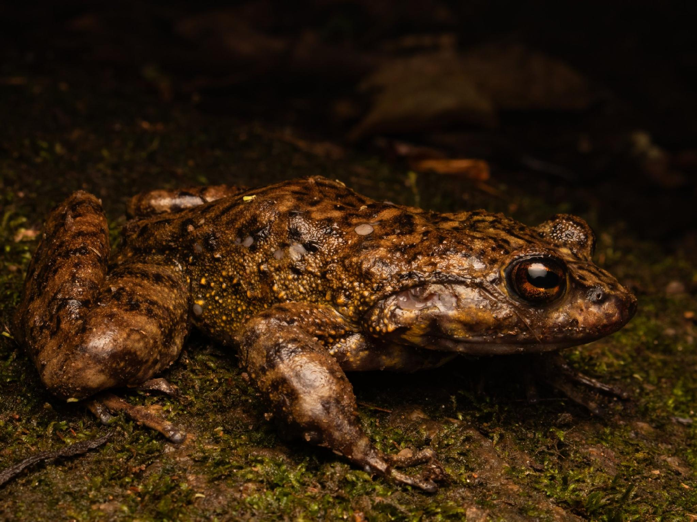

Bióloga • Supervisora Ambiental • Pesquisadora • Data Science (USP)
Apaixonada pela vida silvestre, com vivência prática no campo e visão analítica. Da lama e águas costeiras à gestão de grandes obras rodoviárias e modelagem de dados na USP: transformando rigor ambiental em soluções sustentáveis que funcionam no mundo real.



Sou Micheli Mac Intir, bióloga licenciada pelo UNIFATEA (com bolsa CAPES), supervisora ambiental e atualmente pós-graduanda em Data Science & Analytics pela USP/ESALQ.
Minha trajetória une o rigor técnico à capacidade de diálogo. Ao longo dos anos, atuei desde o resgate e reabilitação de fauna silvestre junto à Polícia Militar Ambiental no Vale do Paraíba, até o comando de operações de supervisão ambiental em obras de grande porte rodoviário (BR-153 e BR-369) e frentes industriais de celulose (Arauco), portuárias (São Sebastião) e hidrelétricas (PCH Verde).
Com o objetivo de criar uma consultoria dinâmica, próxima e moderna, fundei a BioKuri — Pesquisa e Soluções Ambientais ao lado do biólogo e taxonomista Lucas Aøsf. Na BioKuri, combinamos conhecimento de ponta em taxonomia, gestão ambiental de campo e inteligência de dados para entregar diagnósticos seguros e conformidade real aos empreendimentos.
Resolução rápida de NCs, interface com órgãos e equipes operacionais.
Indicadores ambientais, visualização de dados e análises robustas com foco em ESG.


Empresa Fundada & LideradaKuri — do tupi-guarani para a nobre Araucária (pinheiro-do-paraná). Raízes profundas, visão de longo alcance e respeito inegociável à vida.
A BioKuri nasceu da união entre a paixão pela biodiversidade e a necessidade do mercado por consultorias que realmente entendam tanto os prazos e desafios da engenharia quanto as exigências dos órgãos ambientais (IBAMA, IAT, CETESB, IMASUL).
Como sócia-fundadora, lidero frentes de coordenação de equipes de campo, diagnóstico de fauna, resgate e afugentamento de animais, supervisão ambiental e estruturação de indicadores com Ciência de Dados.
"Na BioKuri, o conhecimento taxonômico e ecológico se encontra com a agilidade operacional. Nós desatamos nós ambientais com ciência e responsabilidade."
Da supervisão direta em frentes rodoviárias complexas aos maiores complexos industriais e florestais do Brasil.
Responsável pela coordenação técnica e operacional da supervisão ambiental em toda a extensão das obras das rodovias federais BR-153 e BR-369:
Direção executiva e operacional da consultoria, gerenciando contratos, metodologia de diagnósticos de fauna, licenciamento e aplicação de análise de dados a projetos ambientais.
Execução de estudos de impacto, diagnósticos, levantamento e monitoramento contínuo de fauna para grandes players do setor de celulose, portuário, energia e rodovias:
Monitoramento intensivo de ornitofauna na implantação da megafábrica da Arauco (Inocência/MS) e monitoramento de mastofauna para a Cargill (Três Lagoas/MS).
Monitoramento contínuo de ornitofauna costeira e marinha, com pontos amostrais ao longo da costa, em ilhas e no mar aberto (Elementus Soluções Ambientais).
Monitoramento de mastofauna terrestre, mastofauna alada (quirópteros) e ornitofauna para usina hidrelétrica (Cayman Ambiental).
Diagnóstico de fauna terrestre para elaboração do Plano de Controle Ambiental (PCA) da alça noroeste do anel rodoviário de Patos (Cayman Ambiental).
Levantamentos e monitoramentos em Joinville/SC, Itapeva/SP, Bataguassu/MS, Água Clara/MS, Porto de Areia em Aparecida/SP e Pirituba/SP.
Atuação dedicada em conservação da Mata Atlântica e educação científica para a sociedade civil e forças de segurança:
Artigos internacionais, projetos com fomento corporativo e presença na principal cúpula climática do planeta.
Revista: Reptiles & Amphibians (Aceito para publicação, 2026)
Estudo inovador demonstrando a expansão da área de ocorrência do sapinho-flamenguinho de altitude (espécie bioindicadora de áreas montanhosas) no Sudeste brasileiro através da integração de dados de ciência cidadã com validação morfológica e ecológica em campo.

Evento: Conferência das Nações Unidas sobre Mudanças Climáticas (COP 30), 2025
Avaliação empírica de como o adensamento florestal com espécies nativas impacta a atenuação térmica local e serve como corredor ecológico para a recolonização de aves na bacia do Paraíba do Sul.
Financiador: BASF (Matriz São Paulo)
Levantamento sazonal sistemático da comunidade de aves do município de Guaratinguetá/SP, mapeando o uso do espaço urbano, rural e florestal ao longo de quatro estações climáticas.
Responsável: Micheli Mac Intir | Integrante: Lucas Aøsf
Projeto de pesquisa voltado a atualizar a lista conhecida de anfíbios e répteis da Serra da Bocaina, preenchendo lacunas de conhecimento para a parte alta da serra (região de São José do Barreiro/SP).
Um pouco da rotina: expedições, água, lama, ciência e o amor diário pelos animais e pela natureza.
Especialização focada em modelagem de dados, algoritmos de machine learning aplicados, inteligência preditiva e análise de grandes volumes de informações ambientais.
Bolsista CAPES. TCC voltado a "Levantamento Ornitológico no Parque Ecológico do Taboão, Lorena/SP". Orientação prof. Ricardo Mendonça.
Seja para supervisão ambiental em obras rodoviárias, diagnósticos de fauna, soluções pela BioKuri ou parcerias científicas, estou à disposição!